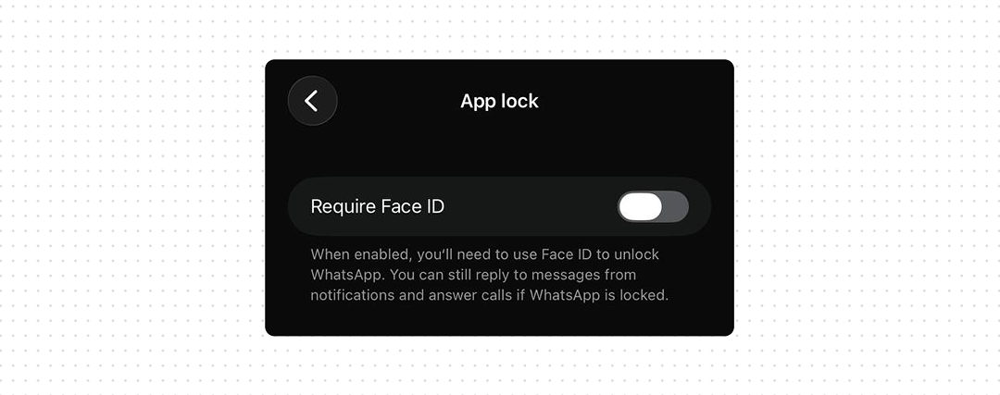
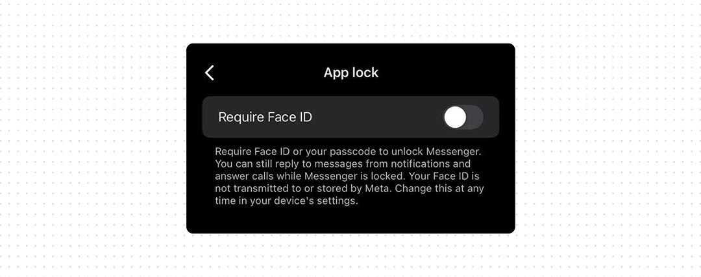
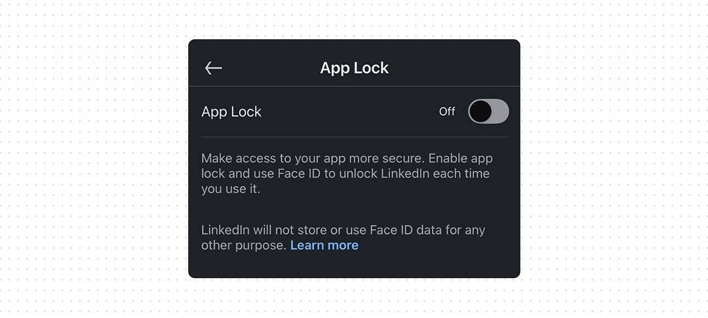

App lock design: why native isn’t always enough

Someone can have access to an unlocked phone. So, messages, social accounts, work information, photos, and other personal data still need another layer of protection. App Lock solves this. It requires Face ID, fingerprint, or a passcode before someone can open the app.
The problem is that OS-level App Lock isn’t always easy to find or available on every device. On iOS, users need to long-press the app icon, while Android 15 uses Private Space, which is a separate locked space for apps rather than a direct App Lock.
This makes the native solution different across platforms, and still leaves room for products to provide their own App Lock to improve usable security.
What good UX looks like
- Provide App Lock inside the product. Put it in Privacy or Security settings, where users are likely to look when they want to protect their account or data. This doesn’t mean replacing the native option, support both so users can choose whichever they can find and use.
- Use the device’s authentication. Face ID, Touch ID, fingerprint, or the device passcode means users don’t need to create another password.
- Explain what App Lock protects. Tell users whether it protects the app itself, notification content, previews, or other information visible outside the app.



Bottom line
Native App Lock is a good security feature, but it shouldn’t be the only one users can rely on. Some users don’t have a supported device or OS version. Others simply don’t know that the feature exists or how to find it. If your app contains sensitive information, give users an App Lock where they already expect to find security controls.
Apple added native app locking in iOS 18. A user can touch and hold an app icon and select Require Face ID, Touch ID, or Passcode. The locked app also stops exposing some of its content in places such as notification previews and search.
iOS 18 is supported from iPhone XR and XS onwards, plus the second-generation iPhone SE and newer. Older devices such as iPhone X and iPhone 8 cannot update to iOS 18 and therefore don’t have this native App Lock.
Android has a different approach. Android 15 introduced Private Space, a separate locked area where users can install and hide sensitive apps. It requires Android 15 or later, supporting hardware, and can also be disabled by a device manufacturer or administrator. It is not the same as locking any existing app directly.
So the native solution is useful, but it is not a reliable replacement for an App Lock inside the product.